library(bluster)
library(cowplot)
library(DropletUtils)
library(scater)
library(scran)
library(scuttle)Clustering 3K PBMCs with Bioconductor
Generated: 2026-06-10 15:48:02
Libraries
Data
Data download
To create a parallel tutorial to the existing tutorial Clustering 3K PBMCs with Seurat, input data files were downloaded from these Zenodo links:
https://zenodo.org/record/3581213/files/genes.tsv
https://zenodo.org/record/3581213/files/barcodes.tsv
https://zenodo.org/record/3581213/files/matrix.mtxif (!dir.exists("data")) {
dir.create("data")
}
if (!file.exists("data/genes.tsv")) {
download.file("https://zenodo.org/record/3581213/files/genes.tsv", "data/genes.tsv")
}
if (!file.exists("data/genes.tsv")) {
download.file("https://zenodo.org/record/3581213/files/barcodes.tsv", "data/barcodes.tsv")
}
if (!file.exists("data/genes.tsv")) {
download.file("https://zenodo.org/record/3581213/files/matrix.mtx", "data/matrix.mtx")
}Create a SingleCellExperiment Object
sce <- DropletUtils::read10xCounts(
samples = "data",
row.names = "symbol"
)
sceclass: SingleCellExperiment
dim: 32738 2700
metadata(1): Samples
assays(1): counts
rownames(32738): MIR1302-10 FAM138A ... AC002321.2 AC002321.1
rowData names(2): ID Symbol
colnames: NULL
colData names(2): Sample Barcode
reducedDimNames(0):
mainExpName: NULL
altExpNames(0):A Galaxy tool wrapper exists, DropletUtils Read10x, but:
- produces an
rdatafile. This file needs to be manually re-typed tordata.sceorloomin the Galaxy interface depending on the requirements of downstream tool wrappers.- does not offer the option to use gene symbols as rownames. Unless the tool wrapper can be update to offer this option, another tool wrapper is needed to set rownames to gene symbols.
Inspect the SingleCellExperiment object.
print(sce)class: SingleCellExperiment
dim: 32738 2700
metadata(1): Samples
assays(1): counts
rownames(32738): MIR1302-10 FAM138A ... AC002321.2 AC002321.1
rowData names(2): ID Symbol
colnames: NULL
colData names(2): Sample Barcode
reducedDimNames(0):
mainExpName: NULL
altExpNames(0):New Galaxy Tool needed to run the code above and write the output to a
txtfile.
Preprocessing
Computation of QC metrics
Identify mitochondrial genes.
mt_gene_ids <- rownames(sce)[grep('^MT-', rowData(sce)[["Symbol"]])]
mt_gene_ids [1] "MT-ND1" "MT-ND2" "MT-CO1" "MT-CO2" "MT-ATP8" "MT-ATP6" "MT-CO3"
[8] "MT-ND3" "MT-ND4L" "MT-ND4" "MT-ND5" "MT-ND6" "MT-CYB" New Galaxy Tool needed to run the code above.
Note: the Single-cell quality control with scater tutorial provides a precomputed file of mitochondrial genes.
Calculate the Proportion of Mitochondrial Reads
gene_subsets <- list()
gene_subsets[["MT"]] <- mt_gene_ids
sce <- scuttle::addPerCellQCMetrics(
x = sce,
subsets = gene_subsets
)
sceclass: SingleCellExperiment
dim: 32738 2700
metadata(1): Samples
assays(1): counts
rownames(32738): MIR1302-10 FAM138A ... AC002321.2 AC002321.1
rowData names(3): ID Symbol subsets_MT
colnames: NULL
colData names(8): Sample Barcode ... subsets_MT_percent total
reducedDimNames(0):
mainExpName: NULL
altExpNames(0):A Galaxy Tool wrapper exists, Scater: calculate QC metrics, but:
- requires the expression matrix in tabular format. This is awkward as the original matrix comes in
mtxformat, and re-exporting the matrix from theSingleCellExperimentobject to tabular format would be awkward and unnecessary given that this function is designed to work on directly on theSingleCellExperimentobject.
Filtering of low-quality cells
Visualise QC Metrics.
plot_list <- list()
plot_list[["detected"]] <- scater::plotColData(
object = sce,
y = "detected"
)
plot_list[["sum"]] <- scater::plotColData(
object = sce,
y = "sum"
)
plot_list[["subsets_MT_percent"]] <- scater::plotColData(
object = sce,
y = "subsets_MT_percent"
)
cowplot::plot_grid(plotlist = plot_list, nrow = 1)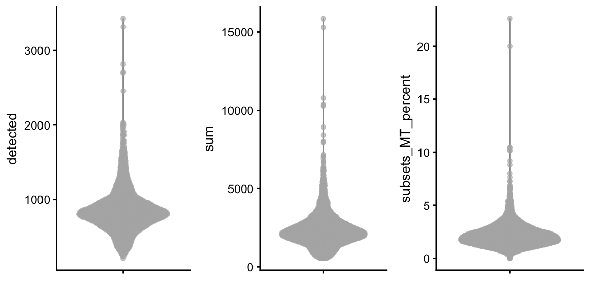
TODO: check for existing wrapper
Note: In contrast to
Seurat,scatercan only plot one QC metric at a time. Here, we usecowplotto combine them into a single figure.
plot_list <- list()
plot_list[["detected"]] <- scater::plotColData(
object = sce,
y = "detected",
x = "sum"
)
plot_list[["subsets_MT_percent"]] <- scater::plotColData(
object = sce,
y = "subsets_MT_percent",
x = "sum"
)
cowplot::plot_grid(plotlist = plot_list, nrow = 1)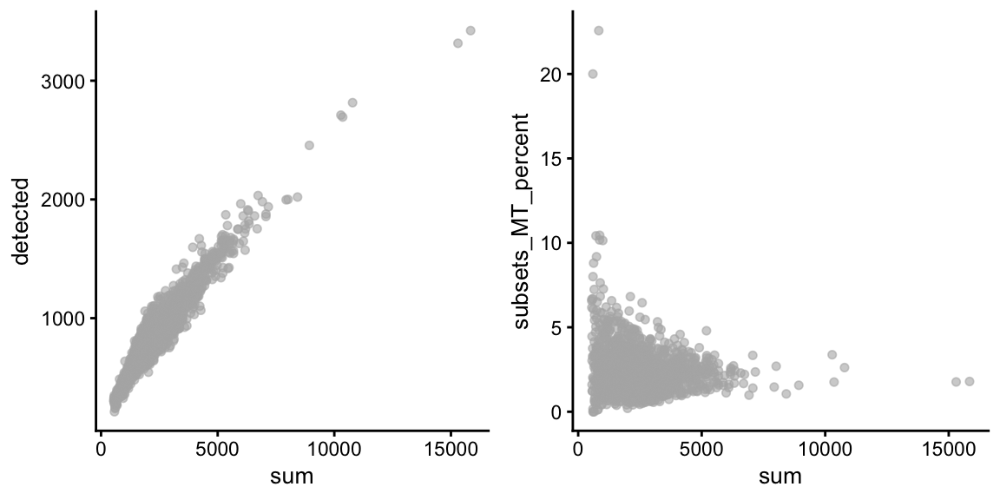
TODO: check for existing wrapper (ideally the same as above)
Note (same as above): In contrast to
Seurat,scatercan only plot one QC metric at a time. Here, we usecowplotto combine them into a single figure.
Filter Out Low Quality Cells
keep_cells <- sce$detected >= 200 & sce$detected <= 2500 & sce$subsets_MT_percent <= 5
sce <- sce[, keep_cells]
sceclass: SingleCellExperiment
dim: 32738 2638
metadata(1): Samples
assays(1): counts
rownames(32738): MIR1302-10 FAM138A ... AC002321.2 AC002321.1
rowData names(3): ID Symbol subsets_MT
colnames: NULL
colData names(8): Sample Barcode ... subsets_MT_percent total
reducedDimNames(0):
mainExpName: NULL
altExpNames(0):TODO: check for existing wrapper
Re-Visualise QC Metrics
plot_list <- list()
plot_list[["detected"]] <- scater::plotColData(
object = sce,
y = "detected"
)
plot_list[["sum"]] <- scater::plotColData(
object = sce,
y = "sum"
)
plot_list[["subsets_MT_percent"]] <- scater::plotColData(
object = sce,
y = "subsets_MT_percent"
)
cowplot::plot_grid(plotlist = plot_list, nrow = 1)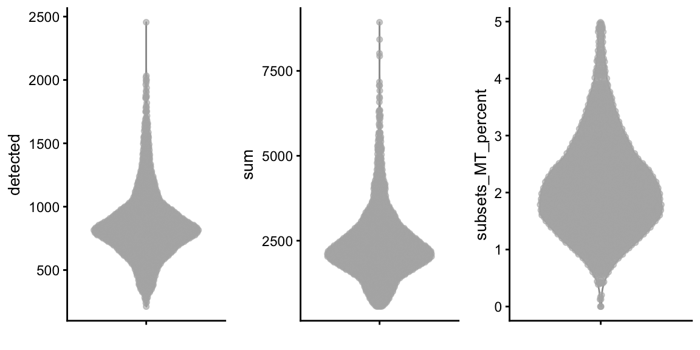
TODO: check for existing wrapper
plot_list <- list()
plot_list[["detected"]] <- scater::plotColData(
object = sce,
y = "detected",
x = "sum"
)
plot_list[["subsets_MT_percent"]] <- scater::plotColData(
object = sce,
y = "subsets_MT_percent",
x = "sum"
)
cowplot::plot_grid(plotlist = plot_list, nrow = 1)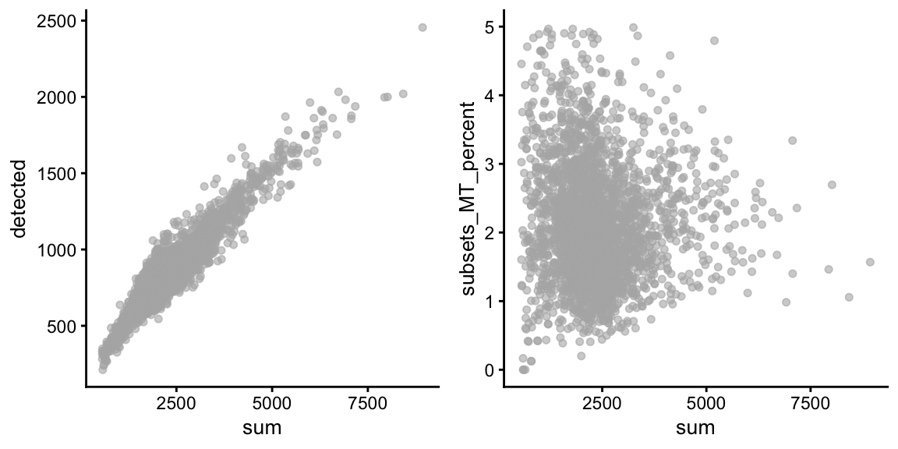
TODO: check for existing wrapper (ideally the same as above)
Further Preprocessing
Separate Preprocessing Steps
sce <- scuttle::logNormCounts(x = sce)
sceclass: SingleCellExperiment
dim: 32738 2638
metadata(1): Samples
assays(2): counts logcounts
rownames(32738): MIR1302-10 FAM138A ... AC002321.2 AC002321.1
rowData names(3): ID Symbol subsets_MT
colnames: NULL
colData names(9): Sample Barcode ... total sizeFactor
reducedDimNames(0):
mainExpName: NULL
altExpNames(0):TODO: check for existing wrapper (ideally the same as above)
allf <- scran::modelGeneVar(x = sce)
hvgs <- scran::getTopHVGs(allf, n = 2000)TODO: check for existing Galaxy tool wrapper.
Note: The wrapper should output both:
- the table of statistics for later plotting, see below (tsv)
- the identifiers of highly variable genes (txt)
message("No direct equivalent to Seurat ScaleData")No direct equivalent to Seurat ScaleDataTODO: check when this might have an impact on the rest of the tutorial
plot(allf$mean, allf$total)
curve(metadata(allf)$trend(x), add=TRUE, col="dodgerblue")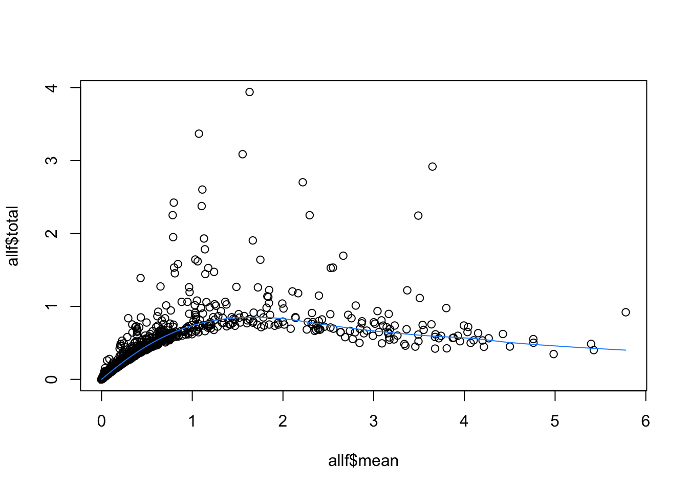
TODO: check for existing Galaxy tool wrapper. Note that there is no packaged function available for this. Both the help page and the OSCA book give base R code for quick inspection. A Galaxy Tool wrapper could easily produce a nicer ggplot2 graphics including labels for the top N genes as in the Seurat tutorial.
Dimensionality Reduction
Principal Component Analysis
Perform the PCA
sce <- scater::runPCA(
x = sce,
ncomponents = 50,
subset_row = hvgs
)
sceclass: SingleCellExperiment
dim: 32738 2638
metadata(1): Samples
assays(2): counts logcounts
rownames(32738): MIR1302-10 FAM138A ... AC002321.2 AC002321.1
rowData names(3): ID Symbol subsets_MT
colnames: NULL
colData names(9): Sample Barcode ... total sizeFactor
reducedDimNames(1): PCA
mainExpName: NULL
altExpNames(0):TODO: check for existing Galaxy tool wrapper.
Visualise the PCA Results
Visualise the PCA Results - Dimensional Loadings
message("No direct equivalent to Seurat::VizDimLoadings")No direct equivalent to Seurat::VizDimLoadingsNote: no direct impact on the rest of the tutorial.
Visualise the PCA Results - DimPlot
scater::plotPCA(sce)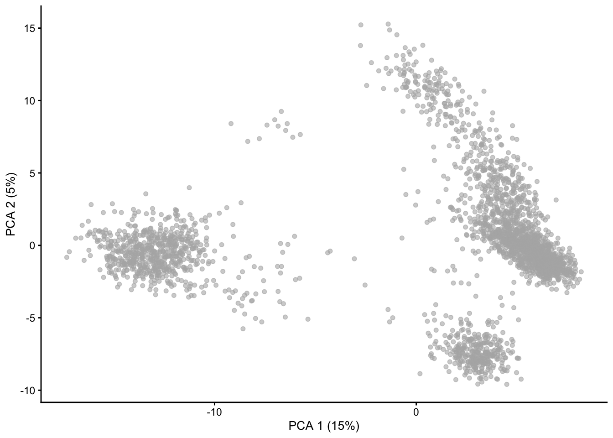
TODO: check for existing Galaxy tool wrapper.
Visualise the PCA Results - Feature Plots
plot_list <- list()
for (gene_id in c("CST3", "CD79A", "HLA-DQA1", "MALAT1", "NKG7", "PPBP")) {
plot_list[[gene_id]] <- scater::plotPCA(
object = sce,
ncomponents = c(1, 2),
colour_by = gene_id
)
}
cowplot::plot_grid(plotlist = plot_list, nrow = 2)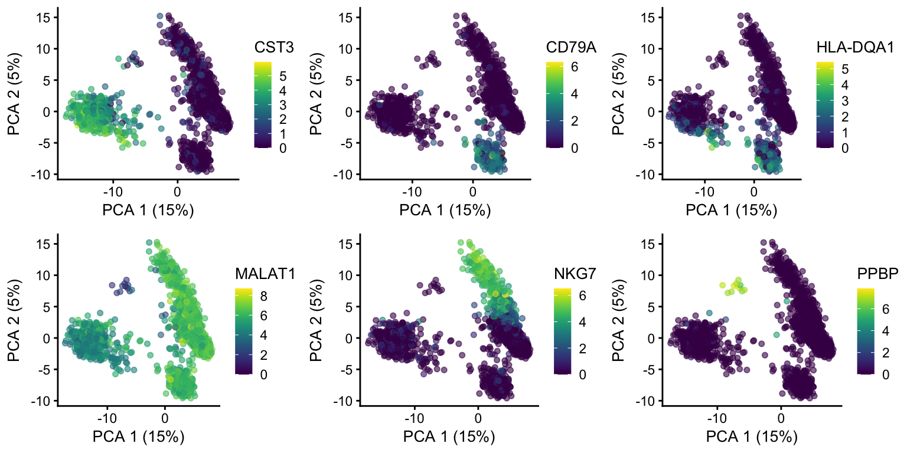
TODO: check for existing Galaxy tool wrapper.
Same for PC2 and PC3.
plot_list <- list()
for (gene_id in c("CST3", "CD79A", "HLA-DQA1", "MALAT1", "NKG7", "PPBP")) {
plot_list[[gene_id]] <- scater::plotPCA(
object = sce,
ncomponents = c(2, 3),
colour_by = gene_id
)
}
cowplot::plot_grid(plotlist = plot_list, nrow = 2)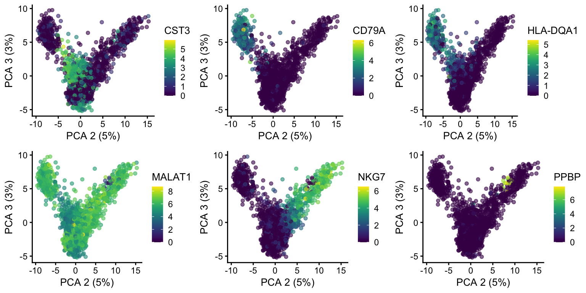
TODO: check for existing Galaxy tool wrapper.
Note: this relies on the “uniquified gene symbol” rather than the actual gene symbol (available in
rowData(sce)[["Symbol"]]). This ensures that every single feature in the dataset can be plotted whether or not it has a unique gene symbol or not.
Visualise the PCA Results - Heatmaps
message("No direct equivalent to Seurat::DimHeatmap")No direct equivalent to Seurat::DimHeatmapNote: no direct impact on the rest of the tutorial.
Determine the ‘dimensionality’ of the dataset
Make an Elbow Plot
percent.var <- attr(reducedDim(sce), "percentVar")
plot(percent.var, log="y", xlab="PC", ylab="Variance explained (%)")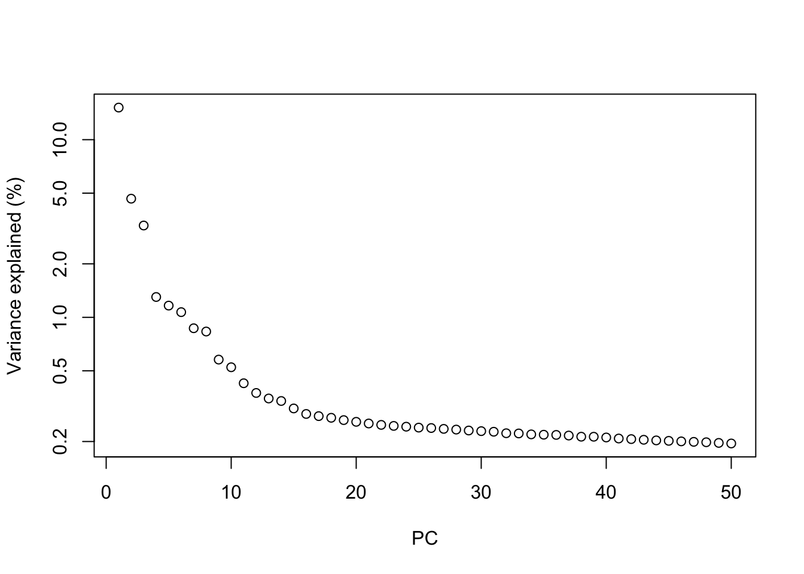
TODO: check for existing Galaxy tool wrapper.
Cluster the Cells
colData(sce)[["cluster"]] <- scran::clusterCells(
x = sce,
use.dimred = "PCA",
BLUSPARAM = bluster::SNNGraphParam(
k = 10,
type="rank",
cluster.fun = "louvain",
cluster.args = list(
resolution = 0.7
)
)
)
sceclass: SingleCellExperiment
dim: 32738 2638
metadata(1): Samples
assays(2): counts logcounts
rownames(32738): MIR1302-10 FAM138A ... AC002321.2 AC002321.1
rowData names(3): ID Symbol subsets_MT
colnames: NULL
colData names(10): Sample Barcode ... sizeFactor cluster
reducedDimNames(1): PCA
mainExpName: NULL
altExpNames(0):TODO: check for existing Galaxy tool wrapper.
Note:
BLUSPARAMthrown in there to illustrate how this might be configured, but a lot customisation is possible.
Run non-linear dimensional reduction (UMAP/tSNE)
Perform Dimensional Reduction with UMAP
sce <- scater::runUMAP(
x = sce,
dimred = "PCA",
pca = 20
)
sceclass: SingleCellExperiment
dim: 32738 2638
metadata(1): Samples
assays(2): counts logcounts
rownames(32738): MIR1302-10 FAM138A ... AC002321.2 AC002321.1
rowData names(3): ID Symbol subsets_MT
colnames: NULL
colData names(10): Sample Barcode ... sizeFactor cluster
reducedDimNames(2): PCA UMAP
mainExpName: NULL
altExpNames(0):TODO: check for existing Galaxy tool wrapper.
Visualise UMAP
Visualise the UMAP
scater::plotUMAP(
object = sce,
colour_by = "cluster",
text_by = "cluster"
)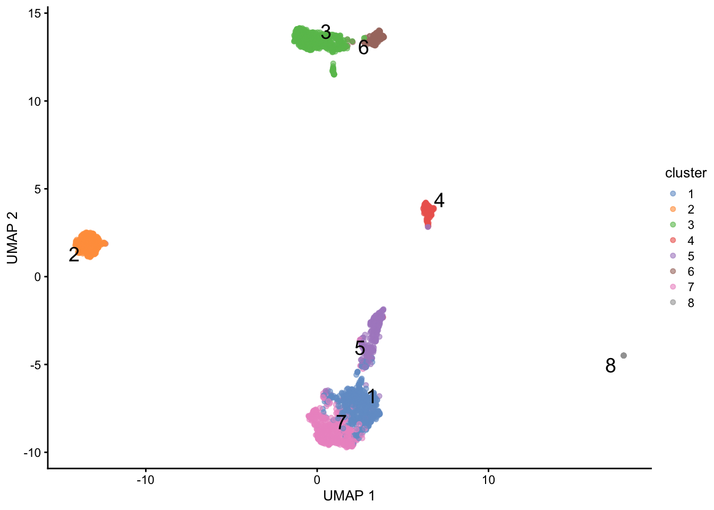
TODO: check for existing Galaxy tool wrapper.
plot_list <- list()
for (gene_id in c("CST3", "CD79A", "HLA-DQA1", "MALAT1", "NKG7", "PPBP")) {
plot_list[[gene_id]] <- scater::plotUMAP(
object = sce,
colour_by = gene_id
)
}
cowplot::plot_grid(plotlist = plot_list, nrow = 2)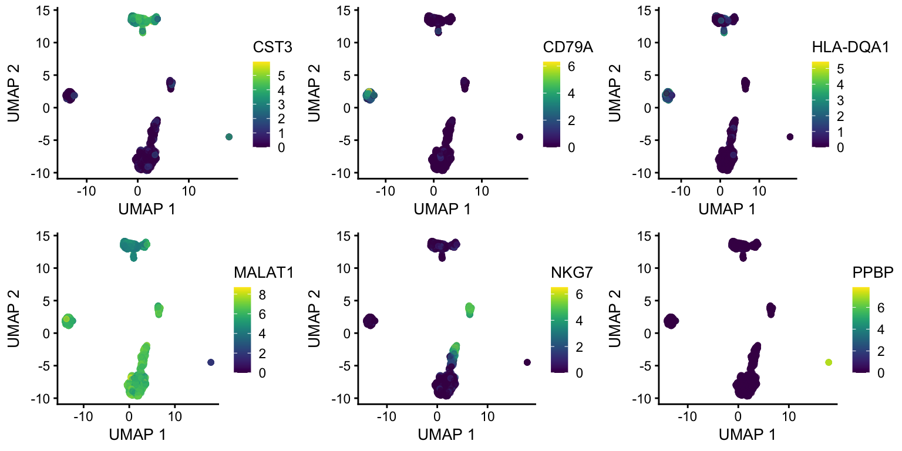
TODO: check for existing Galaxy tool wrapper.
Other ways to visualise clusters
Visualise Expression across Clusters with a Violin Plot
plotExpression(
object = sce,
features = c("CST3", "CD79A", "HLA-DQA1", "MALAT1", "NKG7", "PPBP"),
ncol = 3,
x = "cluster",
colour_by = "cluster"
)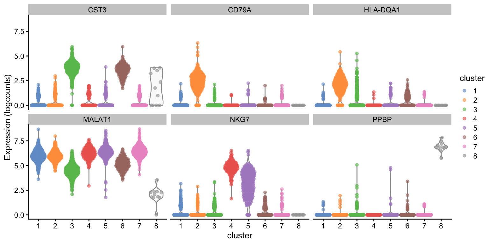
TODO: check for existing Galaxy tool wrapper.
Find Marker Genes
Find Positive Markers for Every Cluster Compared to the Rest
Use findMarkers to Compare All Clusters
find_markers_results <- findMarkers(
x = sce,
groups = colData(sce)[["cluster"]],
test.type = "wilcox",
pval.type = "any"
)
find_markers_resultsList of length 8
names(8): 1 2 3 4 5 6 7 8TODO: check for existing Galaxy tool wrapper.
Note: This function produces a Bioconductor
SimpleListof tables (one per cluster) which would need to be saved in an RDS file unlike the combined table produced by Seurat where a column specifies the cluster for which each gene is a marker of. Furthermore, in the present case, there is no easy way to combine that list of tables into a single table because they have different sets of column headers (each cluster isn’t tested against itself).
could be converted to a base R list to safely write to RDS without triggering packages when re-importing in subsequent steps.
Find Markers of Cluster 2
Use FindMarkers on a Single Cluster
find_markers_results[["2"]]DataFrame with 32738 rows and 11 columns
Top p.value FDR summary.AUC AUC.1 AUC.3
<integer> <numeric> <numeric> <numeric> <numeric> <numeric>
FCGR3A 1 5.49380e-95 3.74700e-92 0.01784994 0.490046 0.447806
SDPR 1 2.81402e-78 1.09673e-75 0.00000000 0.495888 0.493204
GZMA 1 1.09260e-93 6.74900e-91 0.03326703 0.446339 0.484528
HLA-DRB1 1 2.31415e-161 3.78803e-157 0.98462290 0.984623 0.711375
CCL5 1 3.95143e-115 3.92006e-112 0.00883456 0.428225 0.490367
... ... ... ... ... ... ...
AC145205.1 32734 1 1 0.5 0.5 0.5
BAGE5 32735 1 1 0.5 0.5 0.5
CU459201.1 32736 1 1 0.5 0.5 0.5
AC002321.2 32737 1 1 0.5 0.5 0.5
AC002321.1 32738 1 1 0.5 0.5 0.5
AUC.4 AUC.5 AUC.6 AUC.7 AUC.8
<numeric> <numeric> <numeric> <numeric> <numeric>
FCGR3A 0.0973761 0.39830532 0.0178499 0.501888 0.518841
SDPR 0.4901961 0.49520767 0.4746835 0.495327 0.000000
GZMA 0.0332670 0.11526138 0.4745001 0.479521 0.505797
HLA-DRB1 0.9858293 0.96071677 0.7554119 0.988422 0.984980
CCL5 0.1828739 0.00883456 0.4962209 0.499976 0.000000
... ... ... ... ... ...
AC145205.1 0.5 0.5 0.5 0.5 0.5
BAGE5 0.5 0.5 0.5 0.5 0.5
CU459201.1 0.5 0.5 0.5 0.5 0.5
AC002321.2 0.5 0.5 0.5 0.5 0.5
AC002321.1 0.5 0.5 0.5 0.5 0.5TODO: check for existing Galaxy tool wrapper.
Note: For this one, simply extract the second element of the list produced in the previous step.
[… skipped over a few variations for marker detection …]
Identify Cell Types
Make Violin Plots of B Cell Markers
plotExpression(
object = sce,
features = c("CD79A", "MS4A1"),
ncol = 2,
x = "cluster",
colour_by = "cluster"
)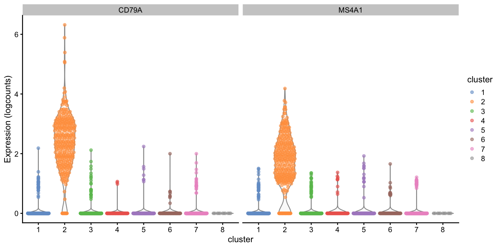
TODO: check for existing Galaxy tool wrapper.
Make Violin Plots of T Cell Markers
plotExpression(
object = sce,
features = c("IL7R", "CCR7", "S100A4", "CD8A"),
ncol = 4,
x = "cluster",
colour_by = "cluster"
)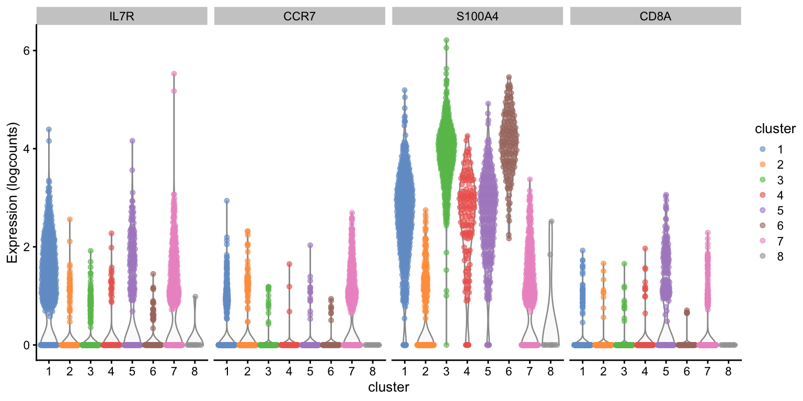
TODO: check for existing Galaxy tool wrapper.
Colour the UMAP Plot by Canonical Marker Expression
gene_ids <- c(
"IL7R", "CCR7", "CD14", "LYZ", "S100A4", "MS4A1", "CD8A", "FCGR3A", "MS4A7",
"GNLY", "NKG7", "FCER1A", "CST3", "PPBP"
)
plot_list <- list()
for (gene_id in gene_ids) {
plot_list[[gene_id]] <- scater::plotUMAP(
object = sce,
colour_by = gene_id
)
}
cowplot::plot_grid(plotlist = plot_list, nrow = 4)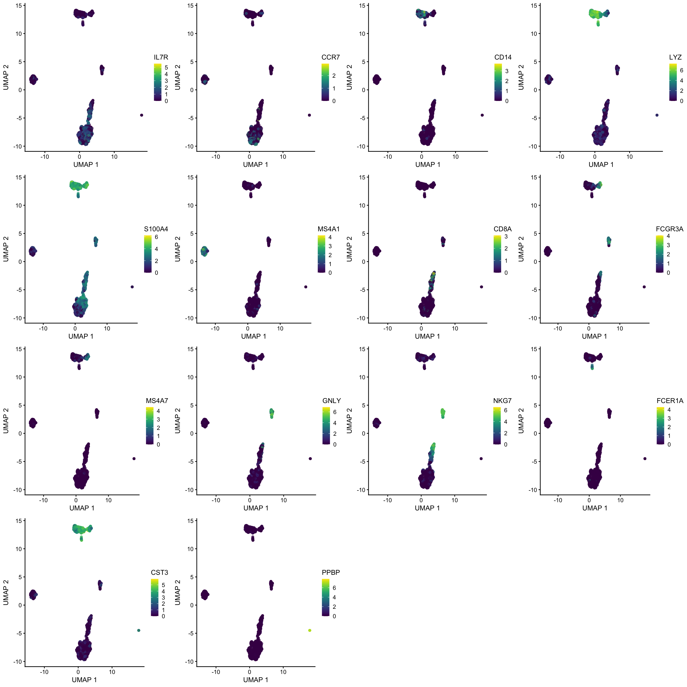
TODO: check for existing Galaxy tool wrapper.
Use Violin Plots to Compare Expression of Canonical Markers by Cluster
gene_ids <- c(
"IL7R", "CCR7", "CD14", "LYZ", "S100A4", "MS4A1", "CD8A", "FCGR3A", "MS4A7",
"GNLY", "NKG7", "FCER1A", "CST3", "PPBP"
)
plotExpression(
object = sce,
features = gene_ids,
ncol = 4,
x = "cluster",
colour_by = "cluster"
)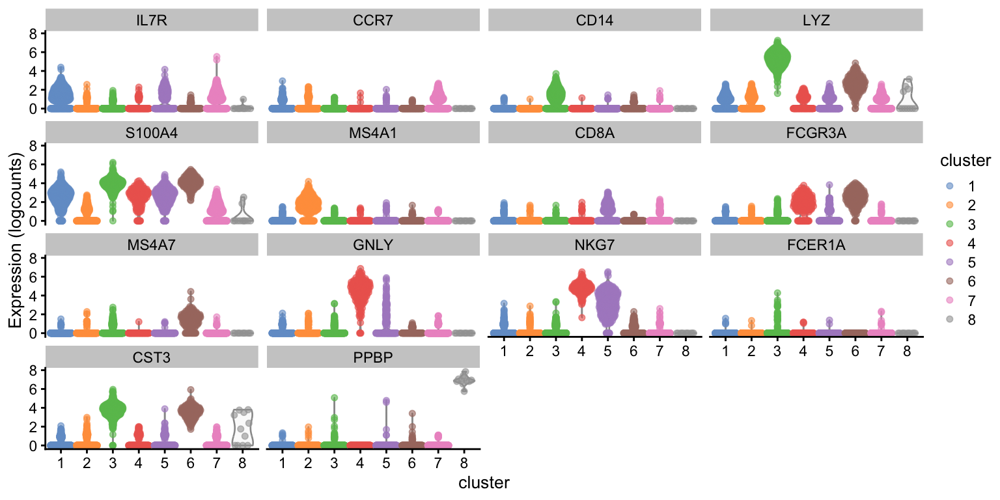
TODO: check for existing Galaxy tool wrapper.
Rename Clusters with Cell Types
new_cluster_labels <- c(
"Memory CD4+ T",
"B",
"CD14+ Mono",
"NK",
"CD8+ T",
"FCGR3A+ Mono",
"Naive CD4+ T",
"Platelet"
)
levels(colData(sce)[["cluster"]]) <- new_cluster_labelsTODO: check for existing Galaxy tool wrapper.
Revisualise the UMAP with Cell Type Annotations
scater::plotUMAP(
object = sce,
colour_by = "cluster",
text_by = "cluster"
)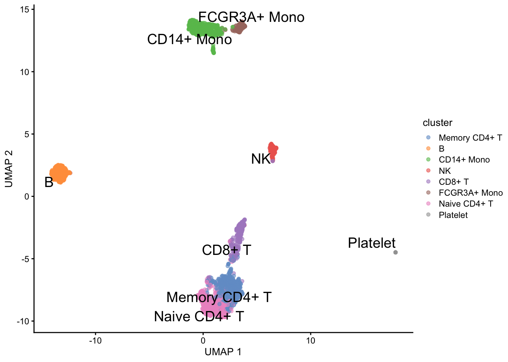
TODO: check for existing Galaxy tool wrapper.